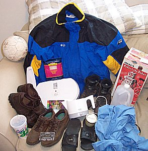

jays.net 1st Occasional "Who's Shiite is This, Anyway?" Auction
aka "Name [the owner of] That Shiite"
Items on the Auction Block (roughly counter clockwise from top),
and their official item numbers.
- Blue, black, and yellow Columbia Sportswear Company wind breaker. Size XL.
- (Soccer |Foot)ball. There's another one in my front closet w/ blue
emblemy junk (not pictured here).
- Pink and blue packet of Cellophane Noodles carbon dated to 1995.
- Full size George Foreman grill & accessories.
- Brown shoes.
- Styrofoam cup, lid, and straw labelled "GIANT 32 ounce." Approximately
2/3 full of a brown non-carbonated fluid w/ floaty things on top. Fluid tastes
vaguely like watered-down "Dr. Pepper."
- More brown shoes.
- Erinem... err... Eminem cassette tape.
- Funky Indian sitar album in psychodelic colors. Labelled "Six Speed
Universe - Soul Mandala" on the back. The front is all Indian jibberish.
- Black Nike flip-flops. Dangling filth all over them tastes vaguely like
years of dust from my garage.
- "Hotpot". Posterior metal surface does, indeed, increase in temperature
when electrical current is applied to the power cord, but no drugs found.
- Small Mason jar w/ label "Lemon Juice". Contents do taste vaguely like the
juice of the "lemon" citrus fruit.
- Blue sheet. No detectable stainage.
- Plastic jug. Filled with a clear, odorless gas.
- Even more brown shoes.
- Robert the Robot. Has a business card on it, referring to a "Herald
Publishing House," but the Missouri address listed no longer exists.
- Bonus item: Steel spring-loaded mole trap. I think my neighbor who moved
away a year ago left this in my backyard. I can't remember for sure though.
About the Auction
All this junk has been left at my house over the years by God knows who.
So, I decided to sell it off to the highest bidder. If you see stuff you like,
you can send me money (err... bid) by clicking the link below.
(Ok, ok. I do know where some of these items came from.
Dad, I'm not selling your robot, I'm just bored on a Sunday afternoon.
-grin- The rest probably belong to Üter or B.R.A.D....?)
How to Bid
| Bidding is simple! Just click here:
|
|
and send me the amount you want to bid via PayPal. I'll let you know if you
won or if you need to send more money. On second thought, just keep sending
more money until I tell you to stop.
Shipping
Sorry, I can't be bothered to ship stuff. Please send a personal carrier
over to pick it up. Ya know, have your people call my people, and we'll do
lunch. (You're buying.)
That's all folks! Bid high and big often!
jay(at)jays(dot)net